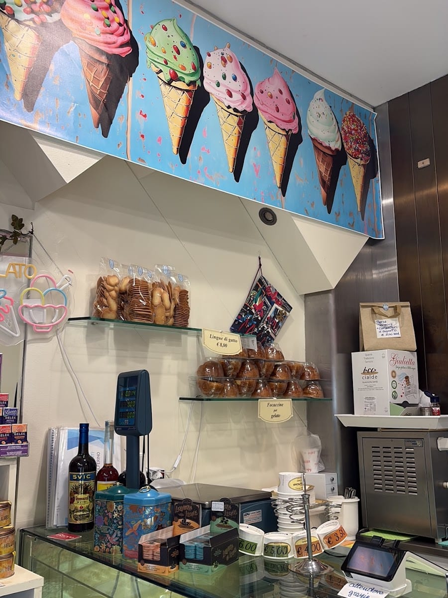
Il gelato nella brioche
La brioche morbida e appena agrumata, riempita di gelato: la colazione (o merenda) come al Sud.
Via Solferino 18 · Brera, Milano
Premiata Gelateria di Zubelli · a conduzione famigliare
Una piccola gelateria storica nel cuore di Brera. Gelato artigianale fatto in casa, fresco e poco zuccherato: lo zabaione «spaziale», la crema al limone che si trova ormai raramente, la frutta di stagione. E il gelato nella brioche.
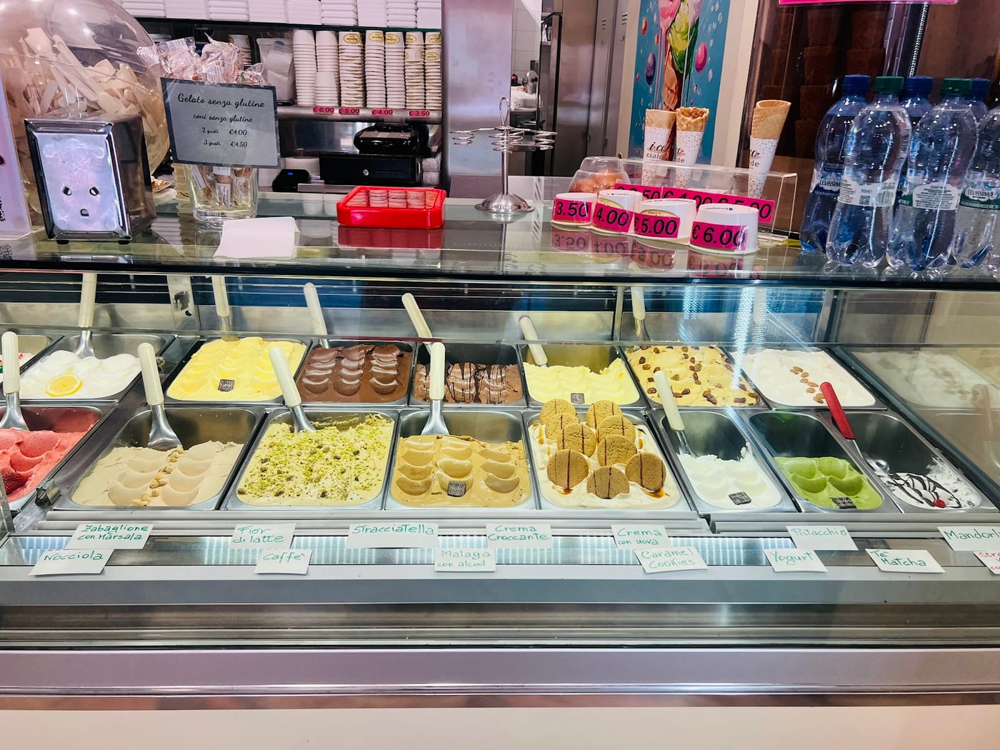
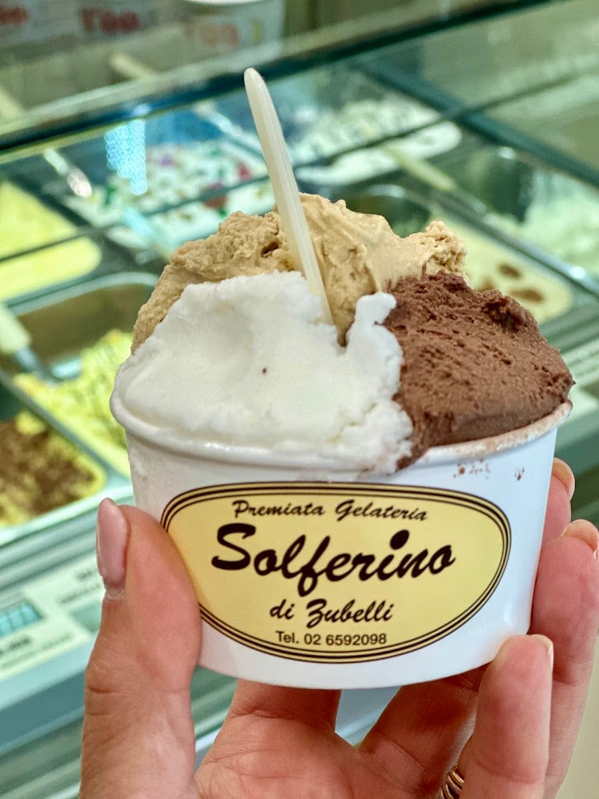
La famiglia
In questa via di Milano storica, la famiglia Zubelli fa il gelato da oltre trent'anni. Una bottega piccola e vera, dove Rita e i suoi accolgono con il sorriso e ti spiegano ogni gusto.
Gelato fatto in casa, fresco ogni giorno, cremoso al punto giusto e poco zuccherato. La qualità di sempre, in una Premiata Gelateria nel cuore di Brera.
La carta dei gusti
I classici che ci sono sempre, e la stagione che cambia di continuo. Chiedi a Rita il gusto del giorno.
…e non solo gelato

La brioche morbida e appena agrumata, riempita di gelato: la colazione (o merenda) come al Sud.
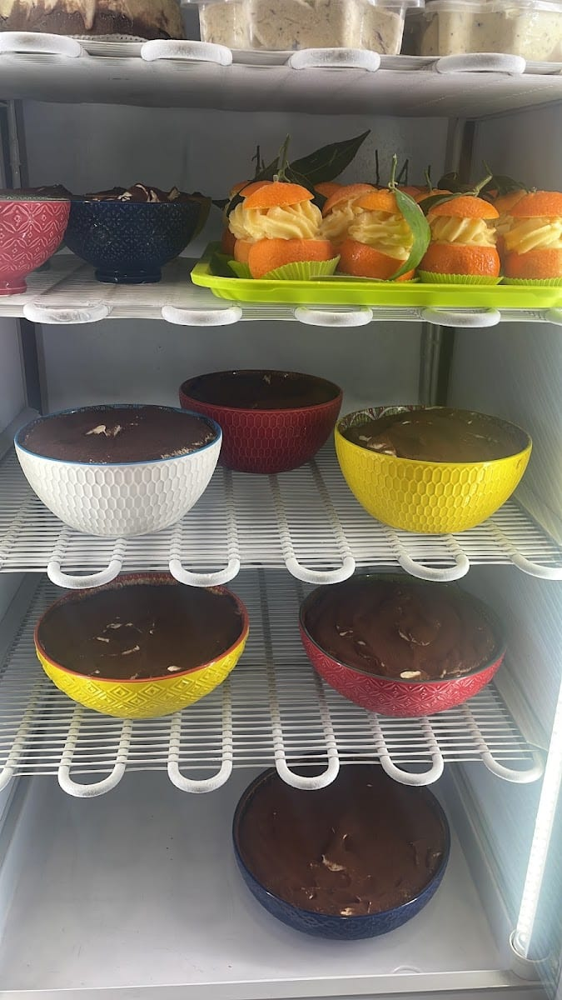
Budini, coppe e semifreddi fatti da noi, per chiudere in dolcezza.
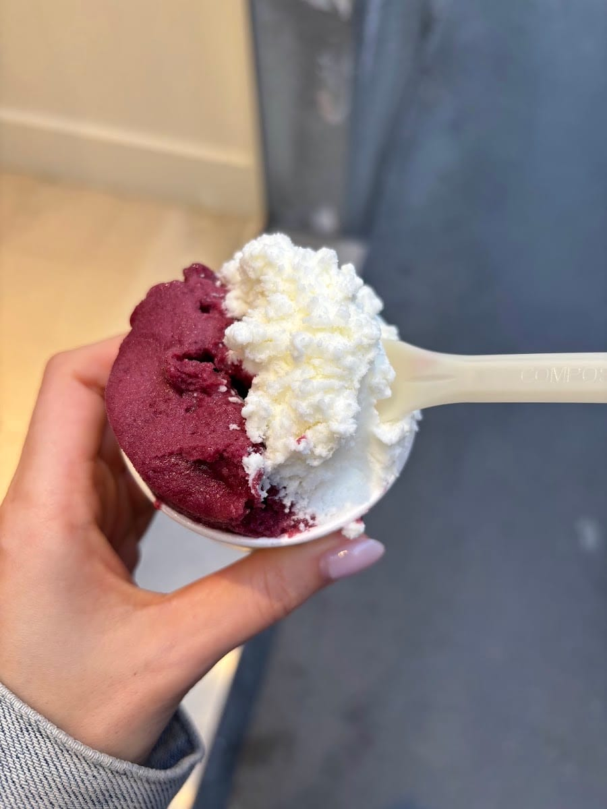
Sorbetti veri di frutta, freschi e leggeri. Con o senza panna, come piace a te.
La gelateria
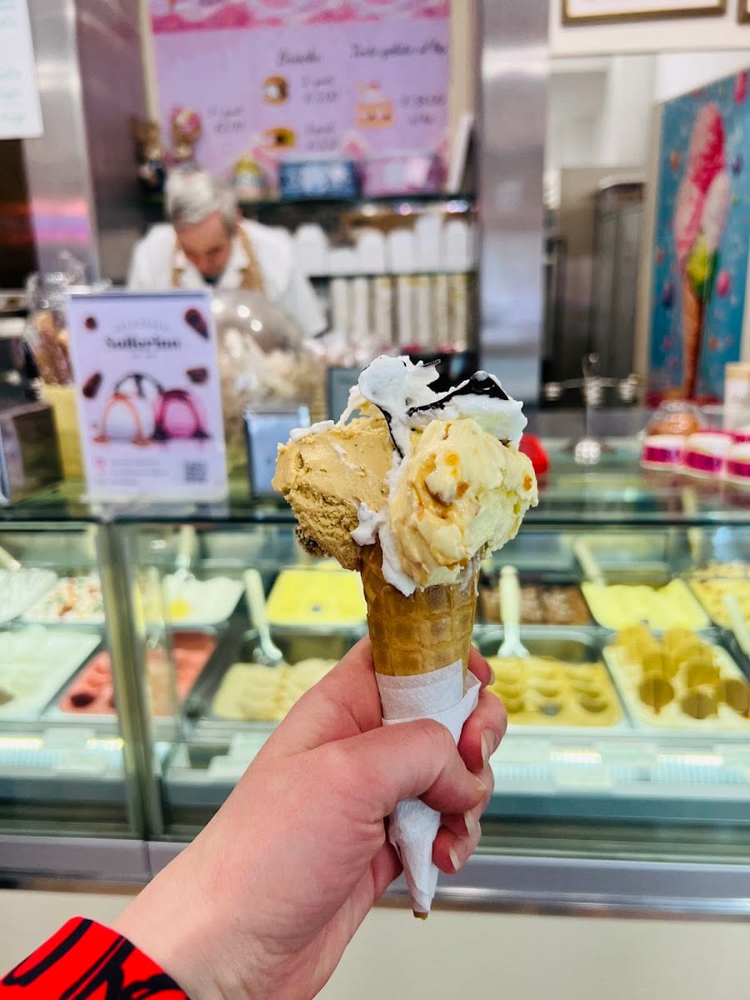
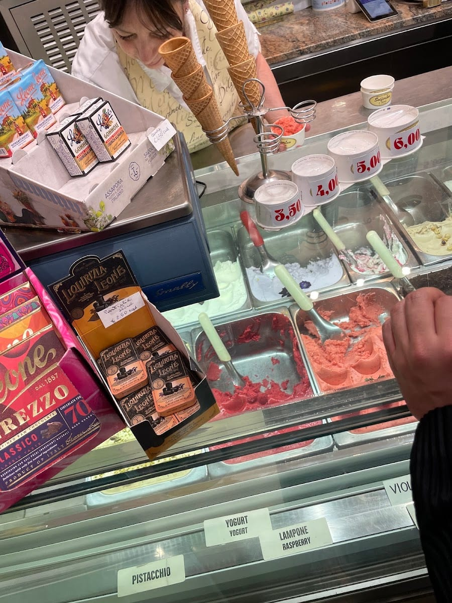
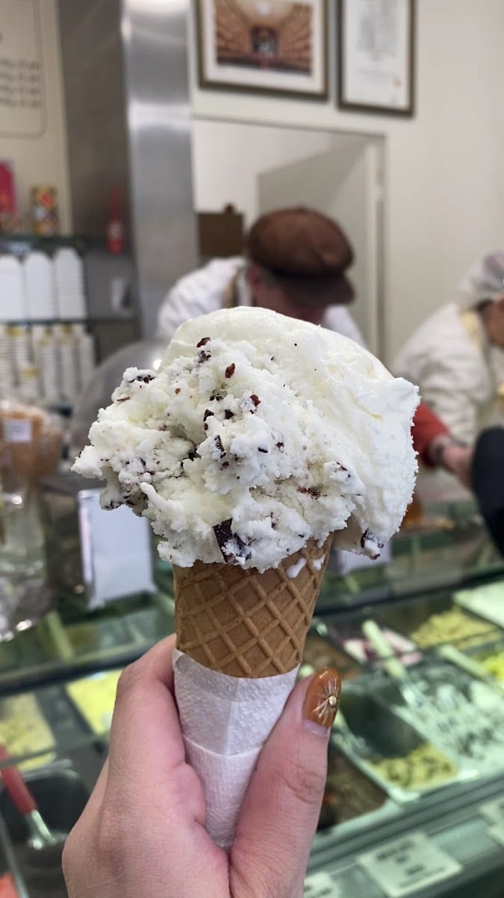
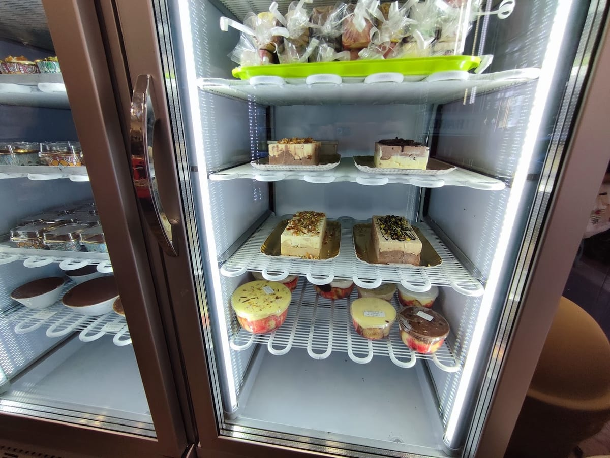
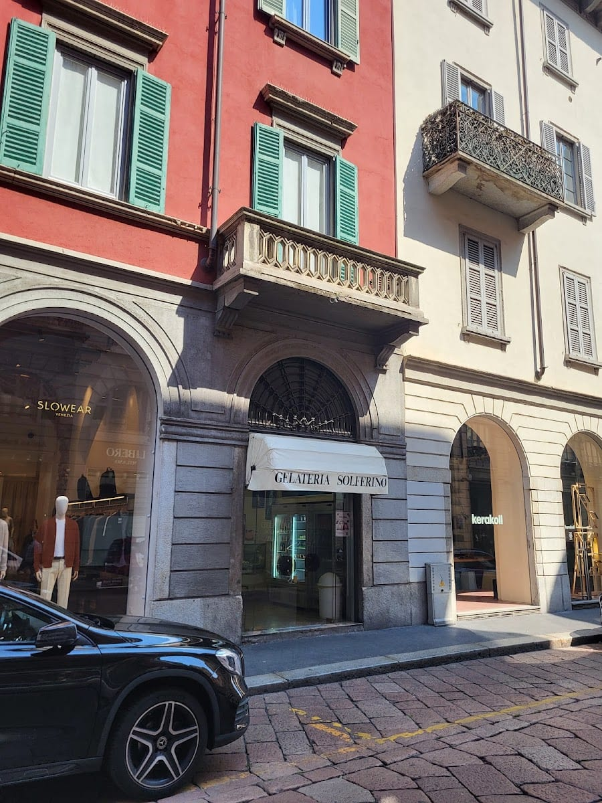
Le voci
Gelato artigianale freschissimo, cremoso al punto giusto e poco zuccherato. La crema al limone si trova ormai raramente, e lo zabaione è spaziale: sembra di assaggiarlo appena montato a mano!
Claudia Bonani · ★★★★★
A nice small old-style gelateria. We enjoyed our quick stop, absolutely recommended. The best ones to try are dark chocolate and coffee — coconut was also mind-blowing.
Volha · ★★★★★
Very nice lady in the shop. We took ice cream in the brioche and it was great: soft, a little lemony brioche, and the lady explained everything. A very pleasant experience.
Katarzyna Martyniak · ★★★★★
Gelateria fantastica, gelato artigianale super buono… e non solo gelato!
Recensione Google · ★★★★★
Gelateria piccola, storica, a conduzione famigliare: ottimo il gelato.
Recensione Google · ★★★★★
Dove siamo
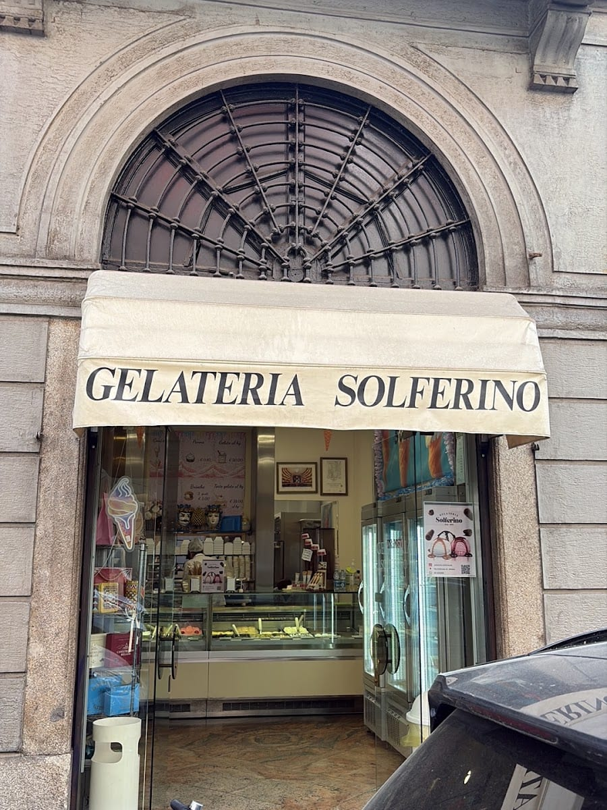
FAQ
In Via Solferino 18, nel cuore di Brera a Milano. Una piccola gelateria storica a conduzione famigliare.
Gelato artigianale fatto in casa, fresco e poco zuccherato. Tra i classici lo zabaione e la crema al limone; poi frutta di stagione e novità come il gelato al latte di bufala. E il gelato nella brioche.
Sì, e non solo: oltre al cono e alla coppetta trovi il gelato nella brioche, i semifreddi e i dolci al cucchiaio.
Tutti i giorni, dalle 8:30 alle 20:00 (la domenica dalle 9:00).